Predictive simulations and experimental design involving extreme aero-chemothermo-mechanical regimes
require high-fidelity material representation across diverse physical states. However, data for metals,
polymers, and propellants, explosives, and pyrotechnics (PEP) remain fragmented, obstructing
traceability for formulators, experimentalists, and simulation engineers. This work introduces
Lumina, a modular Python-based informatics framework that centralizes multiscale
material data — from atomistic simulation datasets to macro-scale experimental records — within a
unified repository. Lumina employs a hierarchical XML-based schema and a dynamic runtime parsing
mechanism to enable schema-independent parameter extraction. The platform integrates a conversational
AI assistant for intelligent material retrieval and natural language querying, establishing a scalable
foundation for data-driven discovery in advanced defence and aerospace engineering.
Material Database ArchitectureRuntime Material ParsingConstitutive Model VisualisationAI-Assisted Material Retrieval
§ 0
Authors
The Lumina framework is the result of an interdisciplinary collaboration spanning aerospace engineering, artificial intelligence, and computer science, bringing together researchers from IIT Madras, Kongu Engineering College, B.S. Abdur Rahman Crescent Institute of Science & Technology, and T John Institute of Technology.
PHOTO PLACEHOLDER
'" />
★ Corresponding Author
Pradeep Kumar Seshadri
Principal Investigator
Assistant Professor
Department of Aerospace Engineering, IIT Madras, Chennai – 600036
The Lumina graphical user interface provides a unified environment for managing thermophysical
material data by integrating XML-based data structures, a PostgreSQL relational database,
AI-assisted querying, and Matplotlib-based visualisation tools. The interface enables users to
seamlessly navigate, analyse, and manipulate material datasets within a single operational context,
substantially reducing workflow complexity and improving experimental reproducibility.
The System Main Window acts as the central hub where all major functionalities are interconnected,
allowing practitioners to move from material selection through property analysis and design-of-experiments
without switching application contexts. The architecture comprises eight primary interface regions,
each fulfilling a distinct analytical responsibility.
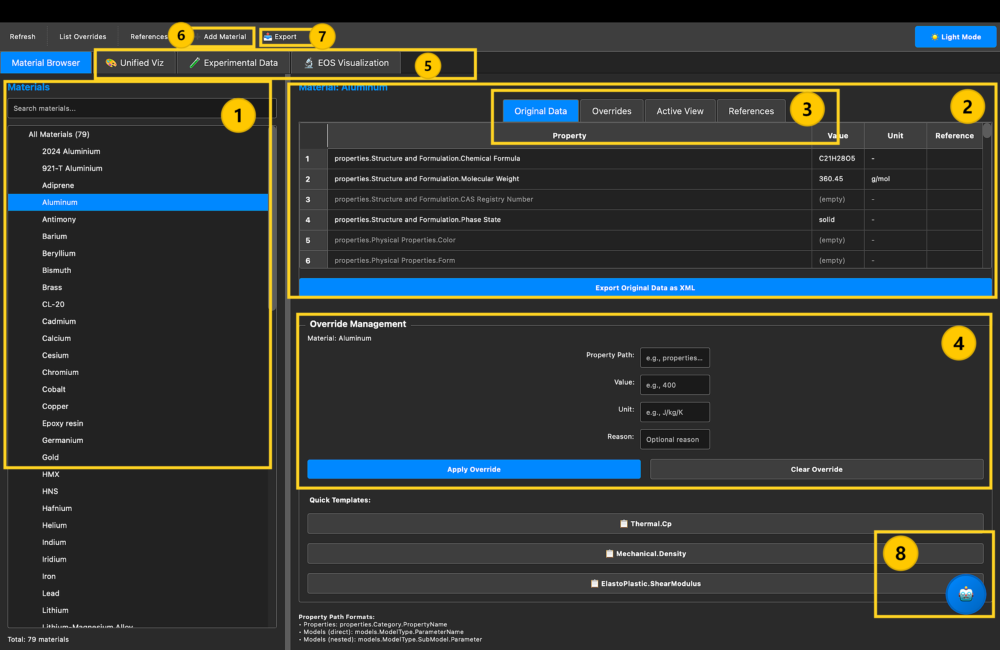
System Main Window Screenshot
Place System_Main_Window.png in the same folder as index.html.
Fig. 6
'"
/>
Fig. 6System Main Window — The central hub of the Lumina framework, showing all eight primary interface regions: (1) Material Browser, (2) Property Viewer, (3) Data State Management Tabs, (4) Override Management, (5) Visualizations, (6) Add New Materials, (7) Export System, and (8) AI Chatbot.
§ 2
Primary Interface Components
Material Browser
A structured, categorised listing of all 79 materials. Single-click selection triggers immediate population of the Property Viewer across metals, polymers, energetics, and composites.
Property Viewer
Displays the full thermophysical parameter set — density, thermal capacity, mechanical constants, EOS coefficients — with units and traceable literature references.
Data State Management
Four tab-based views — Original Data, Overrides, Active View, and References — for structured switching between baseline and modified data.
Override Management
Form-based interface to temporarily modify any parameter — specifying path, value, unit, and justification — for sandbox experimentation without altering validated baselines.
Visualizations — Unified Viz
Integrated visualization suite comprising three modules: Material Property Comparisons, EOS Visualization, and Experimental Data Visualization for Hugoniot and shock data analysis.
Add New Materials
Provides a structured input workflow for ingesting new material entries directly into the PostgreSQL database, with schema validation and unit standardisation built-in.
Export System
Advanced selective export interface allowing users to choose specific materials, individual properties, and model types before generating a simulation-ready XML output file.
AI Chatbot
A locally deployed Llama 2 chatbot (via Ollama) that converts natural language queries into optimised SQL, returning structured material data without requiring any SQL expertise.
2.1 Material Browser
The Material Browser occupies the left panel of the main window and provides a structured,
hierarchically organised listing of all materials currently stored in the PostgreSQL database.
Users may search by name or keyword and select any entry with a single click, triggering
immediate population of the Property Viewer. The browser maintains a live count of available
records (e.g., “Total: 79 materials”) and supports future extension to category-level filtering
across material classes — metallic alloys, polymers, explosives, and propellant compositions.
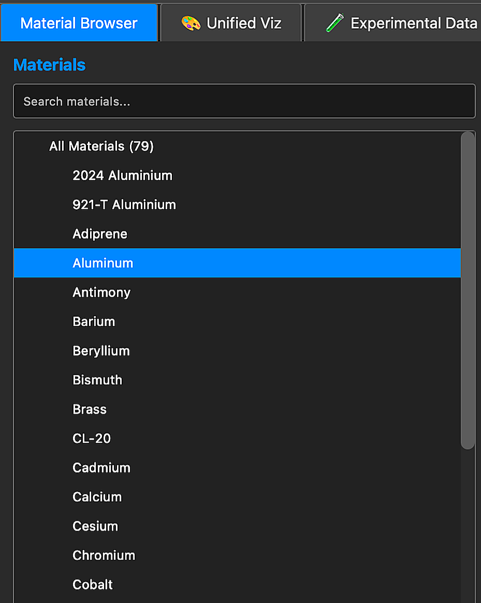
Material Browser Screenshot
Add Material_Browser.png to the same folder.
Fig. 2.1
'"
/>
Fig. 2.1Material Browser — Left-panel listing of all available materials with search and single-click selection.
2.2 Property Viewer
The Property Viewer occupies the central-upper panel and presents the full thermophysical
parameter set of the selected material in a tabular format, with columns for property path,
value, measurement unit, and literature reference identifier. Parameters are hierarchically
named following the XML schema convention (e.g.,
properties.Thermal.Cp),
ensuring unambiguous traceability from GUI display to the underlying data file.
An “Export Original Data as XML” button enables simulation-ready data extraction directly from this view.
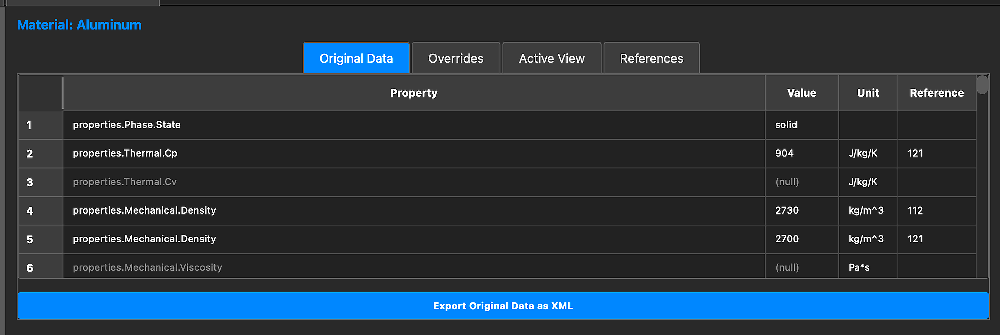
Property Viewer Screenshot
Add Property_Viewer.png to the same folder.
Fig. 2.2
'"
/>
Fig. 2.2Property Viewer — Tabular display of all thermophysical parameters with units, values, and traceable references for the selected material.
§ 3
Data State Management
A central architectural innovation of Lumina is its three-layer data management mechanism,
designed to support iterative Design of Experiments (DoE) and model calibration workflows
without compromising the integrity of validated source data. Each layer fulfils a distinct
role within the analytical pipeline:
Layer
Tab Label
Description
Data Integrity
Original
Original Data
Immutable baseline derived from validated literature sources and experimental records.
Read-only; never modified by user actions.
Override
Overrides
User-specified parameter modifications introduced during the active session.
Tracked separately; reversible at any time.
Active
Active View
Merged dataset combining original values with all applied overrides.
Computation- and simulation-ready; exportable as XML.
References
References
Traceability records linking each parameter to its source literature or experiment.
Linked to original layer; supports audit and reproducibility.
Fig. 3.0Data State Management Tabs — Overview of the four-tab interface showing Original Data, Overrides, Active View, and References layers, illustrating how Lumina separates validated baselines from session-level modifications to maintain full data integrity throughout iterative Design of Experiments workflows.
3.1 Override List
The Override List tab presents a transparent, time-stamped record of every parameter
modification introduced by the user during the session. Each entry displays the full
property path, the original value, the overridden value, the applied unit, and the
user-provided justification. This tracking mechanism is particularly significant for
iterative DoE workflows, where multiple parametric variations are explored in sequence.
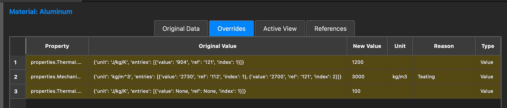
Override List Screenshot
Add Override_List.png to the same folder.
Fig. 7
'"
/>
Fig. 7Override List — All session-level parameter modifications with full traceability, including original values, override values, units, and justification notes.
3.2 Active View
The Active View tab presents the merged, computation-ready dataset by combining the
original baseline parameters with all user-applied overrides. It provides a complete and
updated representation of the material state, including property paths, resolved values,
and units, ensuring that users always interact with the most current data during simulation
pre-processing. This unified view is critical for validating model behaviour, assessing
parameter sensitivity, and preparing simulation-ready XML exports for integration with
downstream solvers such as the coupled C++ material engine.
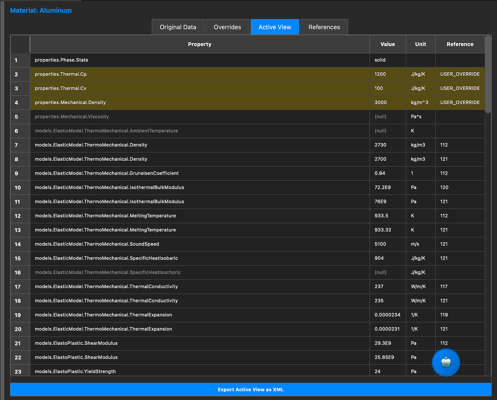
Active View Screenshot
Add Active_View.png to the same folder.
Fig. 8
'"
/>
Fig. 8Active View — Current working dataset combining baseline and overridden parameter values. Exportable as simulation-ready XML for integration with the computational engine.
3.3 Reference Handling
The References tab maintains full traceability by linking every stored parameter to its
respective experimental or literature source. Each reference entry is indexed against the
parameter it describes, enabling users and reviewers to audit the provenance of any value
displayed within the system. This feature is essential for scientific reproducibility —
particularly in defence and aerospace applications where material data validity must be
unambiguously documented. The reference layer is read-only and is not affected by any
override operations applied to the active dataset.
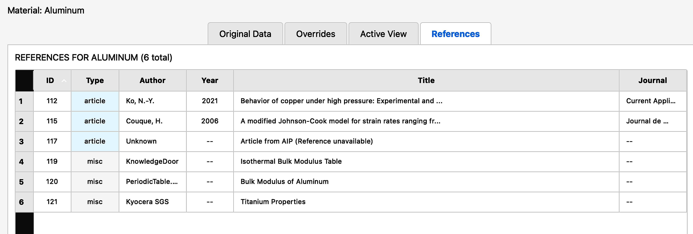
Reference Handling Screenshot
Add Reference_Handling.png to the same folder.
Fig. 3.3
'"
/>
Fig. 3.3Reference Handling — The References tab, linking every material parameter to its validated experimental or literature source for full audit traceability.
§ 4
Override Management Module
The Override Management module, situated in the lower panel of the main window, provides
a structured form-based interface through which users may introduce temporary parameter
modifications to any stored material. The interface accepts four inputs per override operation:
the hierarchical property path (e.g.,
properties.Thermal.Cp),
the new numerical value, the physical unit, and an optional justification string for audit purposes.
Quick Template buttons pre-populate the form for the most commonly modified properties —
Thermal.Cp, Mechanical.Density, and ElastoPlastic.ShearModulus — accelerating
iterative parametric studies. Applied overrides are immediately visible in the Override List tab
and are resolved into the Active View without any modification to the original database record,
ensuring all experimentation remains fully reversible and traceable.
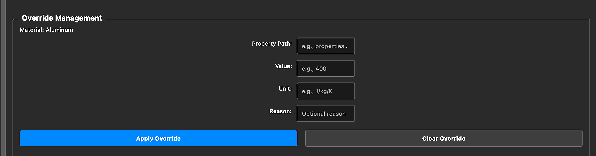
Override Management Screenshot
Add Override_Management.png to the same folder.
Fig. 9
'"
/>
Fig. 9Override Management — Form-based interface for entering property path, value, unit, and justification. Quick Templates accelerate common parametric modifications without touching validated baseline records.
§ 5
Add New Materials
The Add New Materials interface provides a guided workflow for ingesting new material entries
directly into the Lumina PostgreSQL database. Users specify chemical composition, material
class, thermophysical parameters, and source references through a validated form. The system
enforces schema consistency — including unit standardisation and XML-compatible parameter naming —
before committing any record, ensuring the corpus remains clean and simulation-ready as it grows.
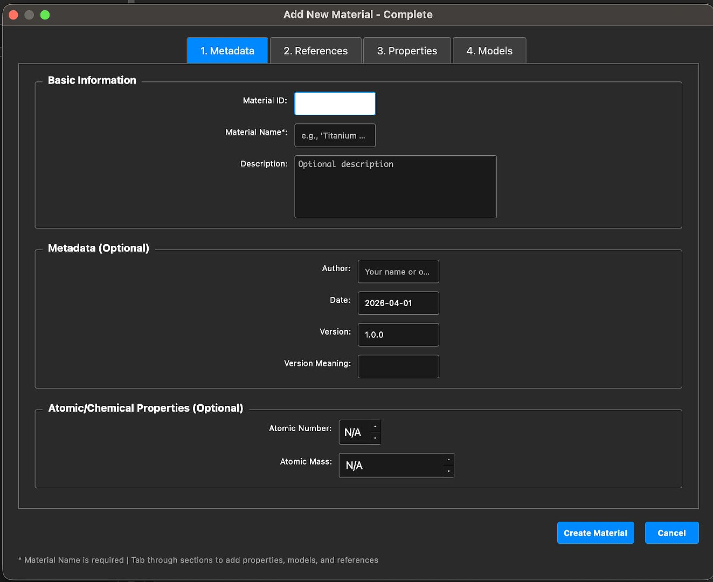
Add New Material Screenshot
Add Add_New_Material.jpeg to the same folder.
Fig. 5.1
'"
/>
Fig. 5.1Add New Material — Guided data-entry interface for ingesting new materials into the Lumina database with schema validation and unit standardisation.
§ 6
Visualization
The Lumina Unified Visualization suite consolidates four distinct analytical visualization
modules within a single tabbed interface — Material Property Comparisons,
EOS Visualization, Experimental Data Visualization, and
Experimental & Theoretical Combined Analysis.
This unified approach enables domain experts to perform cross-material benchmarking,
equation-of-state curve analysis, and Hugoniot shock data interpretation without switching
application contexts, substantially accelerating design-of-experiments and model calibration workflows.
6.1 Material Property Comparisons
The Material Property Comparison module, accessible through the Unified Viz tab,
provides a flexible, multi-material cross-comparison environment for thermophysical parameters.
Users select any combination of materials from the searchable multi-selection panel (supporting
up to all 79 database entries simultaneously) and choose one or more properties to benchmark
— including thermal conductivity, melting temperature, specific heat, density, and mechanical
moduli. The module supports three chart types: a grouped Bar Chart for discrete
property comparisons, a Table view for precise numerical inspection, and a
Scatter Plot for correlation analysis across two selected properties.
Display options allow users to toggle between original database values and user-applied override
data, show or hide physical units, and include or suppress reference traceability links. The active
selection status (e.g., “4 of 79 selected”) is displayed in real time, and the resulting chart
updates dynamically upon any selection change.
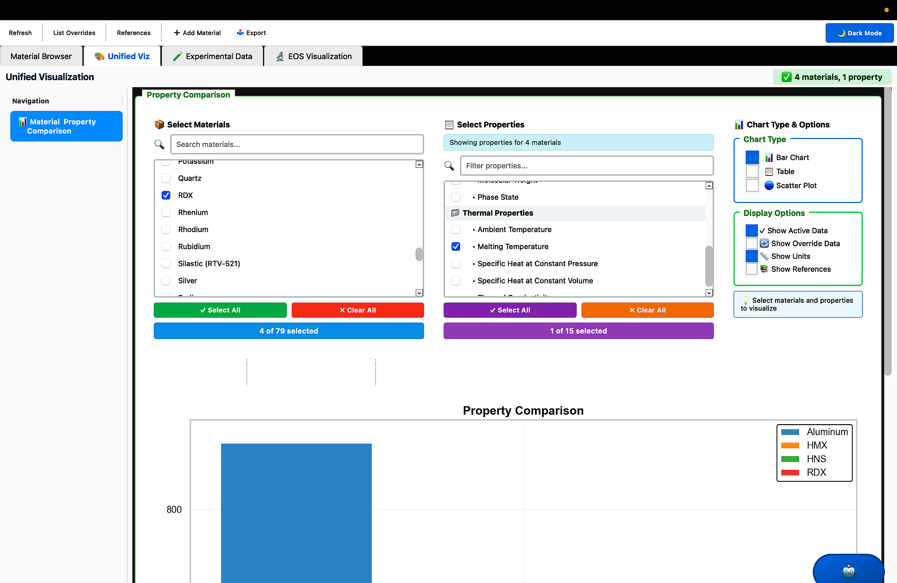
Material Property Comparisons
Add Material_Property_Comparisons.png to the same folder.
Fig. 6.1a
'"
/>
Fig. 6.1aMaterial Property Comparison Interface — Users select from 79 materials and 15+ properties to generate bar charts, tables, or scatter plots with live display options including active data, overrides, units, and references.
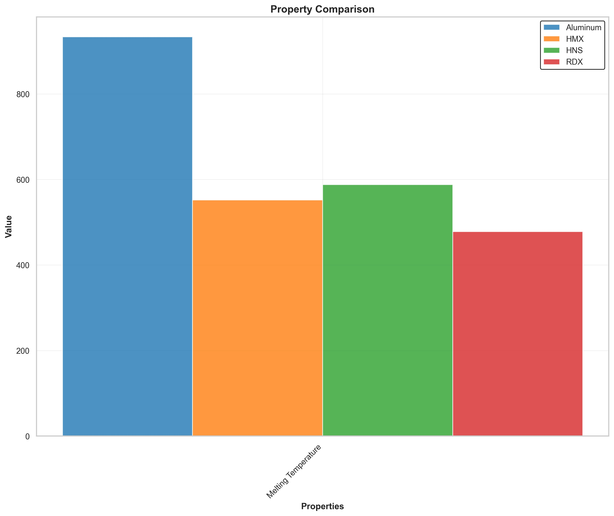
Property Comparison Plot
Add Material_Property_Comparisons_plot.jpeg to the same folder.
Fig. 6.1b
'"
/>
Fig. 6.1bProperty Comparison Bar Chart — Melting Temperature comparison across Aluminum (933 K), HMX (~550 K), HNS (~589 K), and RDX (~477 K). Each material is colour-coded and generated dynamically from the active Lumina database state.
6.2 EOS Visualization
The EOS Visualization module provides dedicated interactive interfaces for computing and
rendering thermodynamic relationships derived from calibrated Equation of State models stored
in the Lumina database. The module currently supports two widely deployed EOS formulations in
shock physics and energetic materials research: the Mie-Grüneisen EOS for
metals under shock compression, and the Jones–Wilkins–Lee (JWL) EOS
for high explosive detonation product expansion. Each model has a dedicated sub-interface
that loads parameters automatically from the database, computes thermodynamic outputs in real time,
and renders publication-quality curves for benchmarking and model validation.
Mie-Grüneisen Equation of State
Shock Compression • Metals
The Mie-Grüneisen EOS module provides an interface for studying material behaviour under
shock compression by separating the cold (zero-Kelvin) and thermal contributions to pressure.
The interface allows users to select any metal from the database and automatically loads all
required parameters — including reference density, Grüneisen coefficient (Γ),
and internal energy — ensuring consistency with validated datasets for accurate thermodynamic analysis.
Computed thermodynamic outputs include pressure, volume, and internal energy, which together
form the basis for analysing shock-induced material behaviour across the relevant
pressure–volume regime.
Fig. 6.2aMie-Grüneisen EOS interface for selecting materials and loading parameters from the database for shock compression analysis.
Fig. 6.2bParameter configuration for the Mie-Grüneisen EOS, automatically retrieved from the database — including reference density, Grüneisen coefficient, and internal energy.
Fig. 6.2cComputed thermodynamic results from the Mie-Grüneisen EOS, including pressure, volume, and internal energy outputs for shock-induced material behaviour analysis.
Fig. 6.2dPressure–volume (P–V) relationship from the Mie-Grüneisen EOS, representing compressibility characteristics of the material under high-pressure conditions, essential for shock physics studies.
Jones–Wilkins–Lee (JWL) Equation of State
High Explosives • Detonation Products
The Jones–Wilkins–Lee (JWL) EOS module provides a specialised interface for modelling the
expansion behaviour of high explosive detonation products. Users input detonation-related parameters
— constants A, B, R1, R2, and ω, alongside initial density and energy —
which control the pressure evolution of detonation products. These parameters are automatically
retrievable from the database for any stored energetic material, ensuring consistency with validated
charge characterisation data. Computed outputs include pressure, specific volume, and internal energy,
together with critical Chapman–Jouguet (CJ) point parameters: detonation velocity, particle
velocity, CJ pressure, CJ specific volume, and CJ internal energy. The resulting P–V curve
represents the expansion behaviour of detonation products and is widely used in explosive modelling
and validation studies.
Fig. 6.3aJones–Wilkins–Lee (JWL) EOS interface — tailored for modelling high explosive expansion behaviour with detonation-related parameter inputs and material selection.
Fig. 6.3bJWL EOS input configuration (left panel) — constants A, B, R1, R2, and ω along with initial density and energy governing the pressure evolution of detonation products.
Fig. 6.3cJWL EOS input configuration (right panel) — additional parameter inputs specifying detonation product properties for accurate pressure evolution modelling.
Fig. 6.3dComputed thermodynamic results from the JWL EOS — pressure, specific volume, internal energy, and Chapman–Jouguet point parameters including detonation velocity, particle velocity, CJ pressure, CJ specific volume, and CJ internal energy.
Fig. 6.3ePressure–volume (P–V) curve for the JWL EOS — representing expansion behaviour of detonation products, widely used in explosive modelling and validation studies.
Fig. 6.3fAdditional JWL model plots showing energy relationships and pressure decay trends, providing deeper insight into the thermodynamic response of detonation products.
6.3 Experimental Data Visualization
The Experimental Data Visualization module, accessible through the dedicated
Experimental Data tab, provides a specialised environment for loading, inspecting,
and plotting shock physics experimental records sourced from the Lumina database. The interface
is structured around five functional regions working in concert to deliver a fully interactive
Hugoniot analysis workflow. The database encompasses a broad range of material categories,
covering elements, alloys, compounds, synthetics, plastics, rocks and mixtures, and high explosives,
enabling comprehensive cross-category shock property comparison within a single unified environment.
Experimental Data TabThe dedicated tab within the top navigation bar that activates the experimental data environment, distinct from the Material Browser and Unified Viz modules.
2
Material SelectionA dropdown selector and “Load Experimental Data” button that retrieves all shock experiment records for the chosen material, displaying metadata including variant count and total data points.
3
Experimental Data PointsA scrollable tabular display showing the raw shock experiment data — order index, initial density (ρ₀, g/cm³), shock velocity (Us, km/s), and particle velocity (Up, km/s) — for all dataset variants loaded.
4
Visualization OptionsA plot type selector offering five Hugoniot relationship plots: Us vs Up, P vs Up, P vs V/V₀, V/V₀ vs Up, and ρ₀ vs Up, along with “Generate Plot” and “Save Plot as PNG/PDF” controls.
5
Plotting AreaAn interactive Matplotlib canvas displaying colour-coded data points and linear fit lines per variant, with a full navigation toolbar for zoom, pan, axis adjustment, and direct image export.
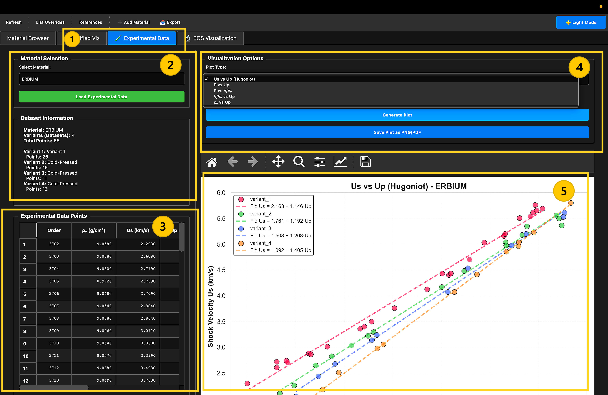
Experimental Visualization Features
Add Experimental_Visualization_Features.png to the same folder.
Fig. 6.3a
'"
/>
Fig. 6.3aExperimental Data Visualization Interface (ERBIUM) — Annotated view of the five functional regions: (1) Experimental Data tab, (2) Material selection panel, (3) Experimental data points table, (4) Visualization options with plot type selector, and (5) Interactive Matplotlib plotting area showing Us vs Up (Hugoniot) with multi-variant linear fits.
Dataset Information Example — ERBIUM: Material: ERBIUM · Variants (Datasets): 4 · Total Points: 65.
Variant 1 (26 pts), Variant 2 — Cold-Pressed (16 pts), Variant 3 — Cold-Pressed (11 pts), Variant 4 — Cold-Pressed (12 pts).
Each variant represents an independently collected experimental campaign with distinct initial density conditions,
enabling rigorous inter-variant comparison within the Hugoniot framework.
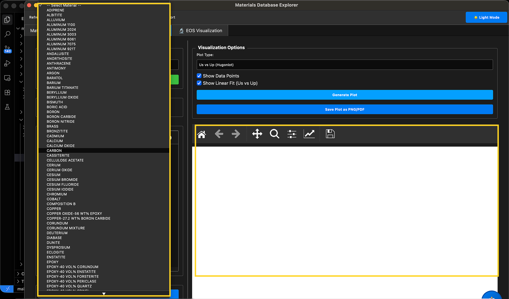
Experimental Data Points Table
Add Experimental_Datas.png to the same folder.
Fig. 6.3b
'"
/>
Fig. 6.3bExperimental data list as displayed in the Lumina GUI — showing the scrollable tabular record of shock physics measurements spanning material categories including Elements, Alloys, Compounds, Synthetics, Plastics, Rocks and Mixtures, and High Explosives, together with the interactive plot area for Hugoniot analysis.
6.4 Experimental and Theoretical Data Visualization
Beyond experimental scatter data, Lumina supports the simultaneous overlay of theoretical
model predictions with empirical Hugoniot measurements, enabling direct visual validation
of constitutive and equation-of-state models against multi-source experimental evidence.
When a material’s EOS model parameters are stored in the database alongside its experimental
shock data, the plotting engine can generate a combined figure that renders experimental
data points (per variant, colour-coded) alongside the analytically derived curve from the
calibrated model. This dual-layer representation is essential for model benchmarking — allowing
formulators and simulation engineers to immediately assess model fidelity across the full
pressure-velocity regime captured in the experimental corpus.
The theoretical curve is computed in real time from the stored model coefficients
(e.g., Hugoniot intercept C₀ and slope s for a linear Us–Up relationship), overlaid
on the experimental scatter, and annotated with the fit equation. Discrepancies between
model and data are immediately visible, guiding the iterative model calibration process
that the Override Management module is designed to support.
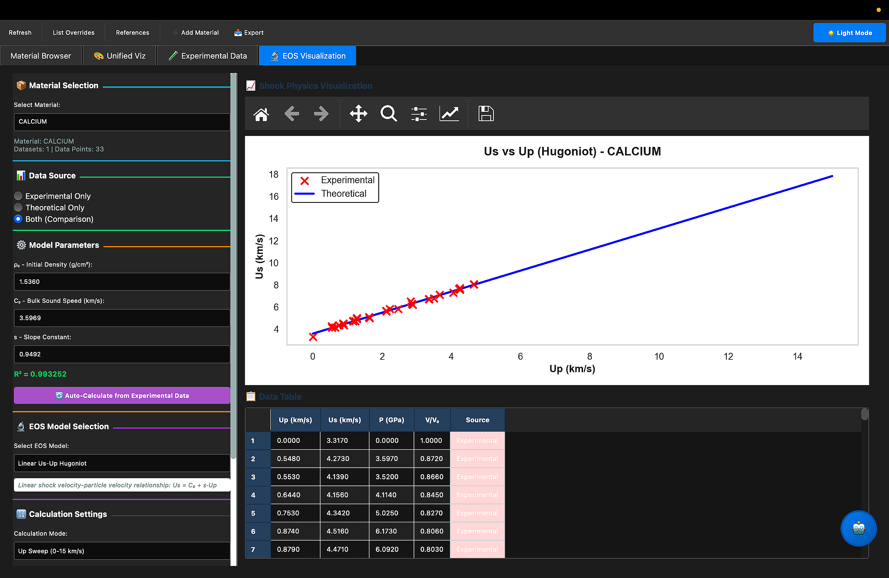
Experimental and Theoretical Visualization
Add Experimental_Theoritical_Both_Visual.png to the same folder.
Fig. 6.4
'"
/>
Fig. 6.4Combined Experimental and Theoretical Hugoniot Visualization — Experimental data points (colour-coded by variant) overlaid with the analytically computed EOS model curve, enabling direct visual validation of constitutive model fidelity against multi-source empirical shock data.
§ 7
Advanced Export System
The Lumina Advanced Export System provides a highly selective, user-controlled mechanism
for generating simulation-ready XML output files from the material database. Unlike a
bulk database dump, the export interface empowers users to define precisely which materials,
which thermophysical properties, and which constitutive model types are included in the
exported file — ensuring that downstream simulation solvers receive only the data they
require, formatted for direct ingestion without further pre-processing.
The export dialog is structured into four functional sections: a Materials
selection list, a Properties checklist, a Models selector,
and an Output File path browser. Each section operates independently,
allowing arbitrary combinations — for example, exporting only the EOS model and Density
for TNT, or extracting all properties for a curated set of metallic materials.
Selective Material Export
Choose any subset of the 79 database materials — including “Select All” / “Deselect All” shortcuts — for targeted multi-material XML bundles.
Property-Level Granularity
Individual properties (Density, Cp, thermal conductivity, etc.) are independently checkable, enabling simulation-specific data packages with minimal redundancy.
Model Type Selection
Constitutive models — ElasticModel, ElastoPlastic, ReactionModel, EOSModel — can be individually included or excluded from the XML output.
Flexible Output Path
Users browse to any directory and specify a custom filename for the output XML, with an option to include full material metadata (Id, Name, Author, Date, Version).
The export system also supports metadata inclusion — toggling whether material identifier,
author attribution, creation date, and version tags are embedded in the XML root element.
The exported XML strictly conforms to the Lumina hierarchical schema, ensuring compatibility
with the coupled C++ material engine and any other downstream parser configured for the Lumina format.
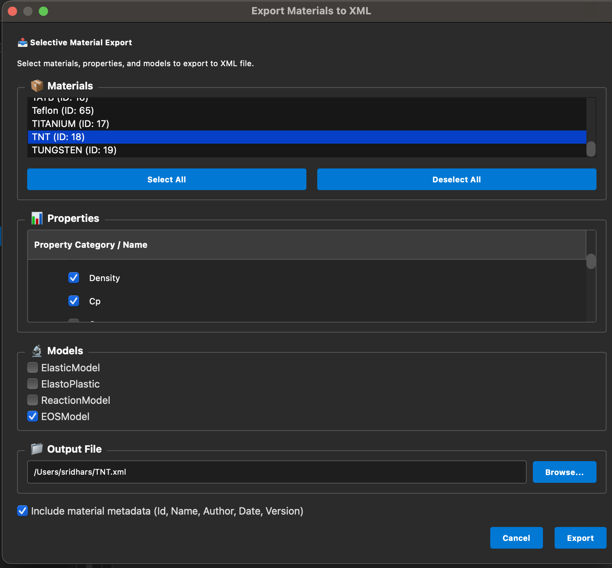
Export System Screenshot
Add Export_System.png to the same folder.
Fig. 7.1
'"
/>
Fig. 7.1Advanced Export System — The “Export Materials to XML” dialog showing selective material export (TNT highlighted), property checkboxes (Density, Cp selected), model type selection (EOSModel active), output file path browser, and metadata inclusion toggle.
§ 8
AI Chatbot Interface
The AI Chatbot module enables natural language interaction with the entire Lumina material
database. Powered by a locally deployed Llama 2 model via the Ollama framework, the system
operates completely offline, ensuring data security in sensitive defence and aerospace
applications. Users type free-form queries — such as “Show me the density of HMX” or “List all
materials with Cp above 400 J/kg·K” — and receive structured, human-readable responses derived
from optimised SQL executed against the PostgreSQL backend.
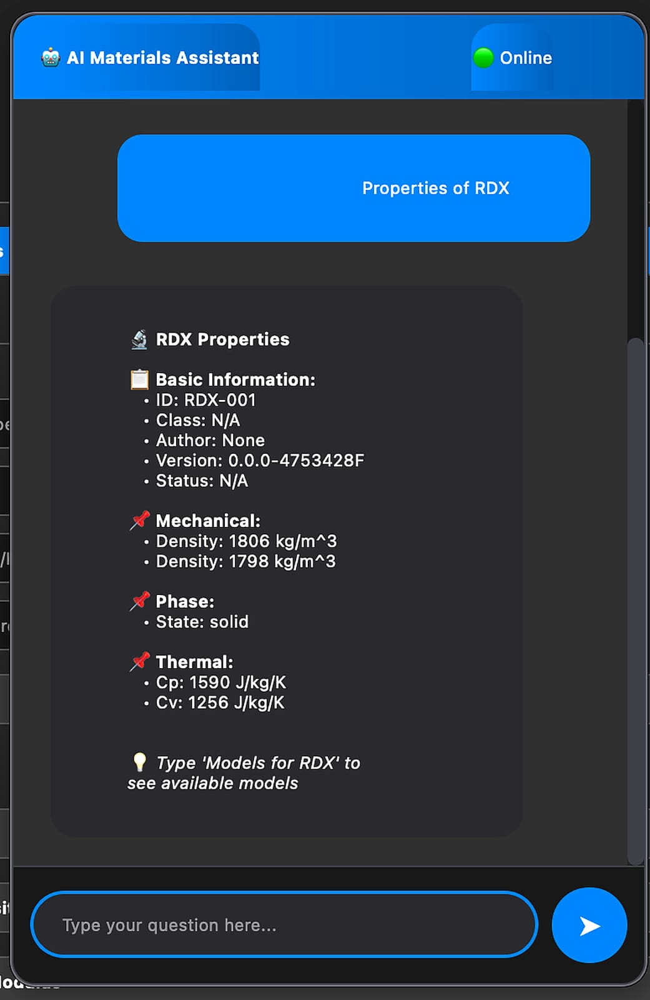
AI Chatbot Interface Screenshot
Add AI_Chatbot.jpeg to the same folder.
Fig. 10
'"
/>
Fig. 10AI Chatbot Interface — Users query the material database in natural language. The locally deployed Llama 2 model translates intent into optimised SQL and returns structured, human-readable material data. No SQL expertise required.
§ 9
System Demonstration
The following screen-capture demonstration presents the complete operational workflow of the
Lumina framework — from material selection and property inspection through parameter override
and Active View validation — illustrating how domain experts can interact with the system
without requiring SQL or programming expertise.